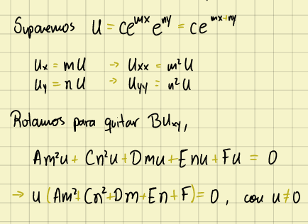
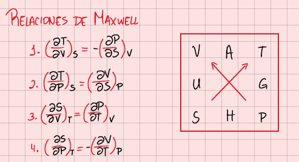
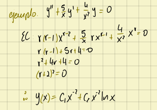
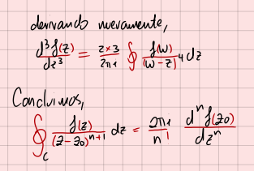
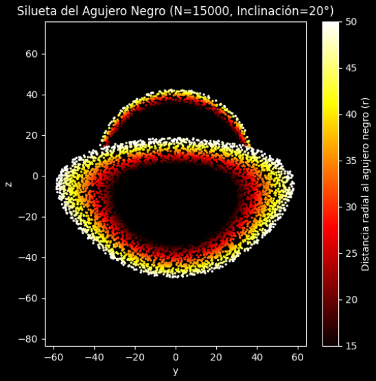

Coordenadas curvilíneas, espacios funcionales, teoría de Sturm-Liouville y funciones especiales.

Leyes de la termodinámica, gases, potenciales termodinámicos, sistemas abiertos e introducción a sistemas de no-equilibrio

EDO lineales de primer y segundo orden, transformada de Laplace, solución por series y aplicaciones.

Condiciones de diferenciación de Cauchy-Riemann, teorema integral de Cauchy, series complejas y series de Laurent, teoría de residuos e introducción al álgebra tensorial.

Modelación de un agujero negro con Beaming relativista